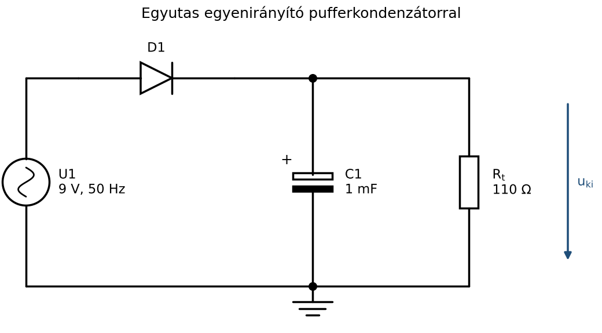
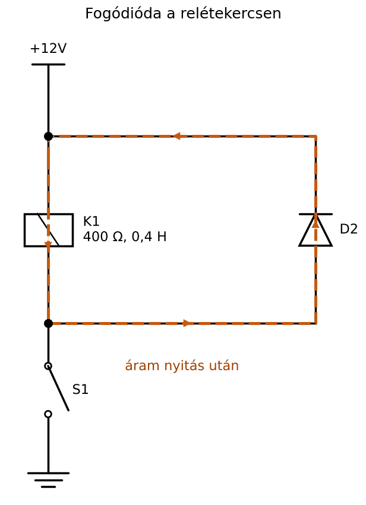
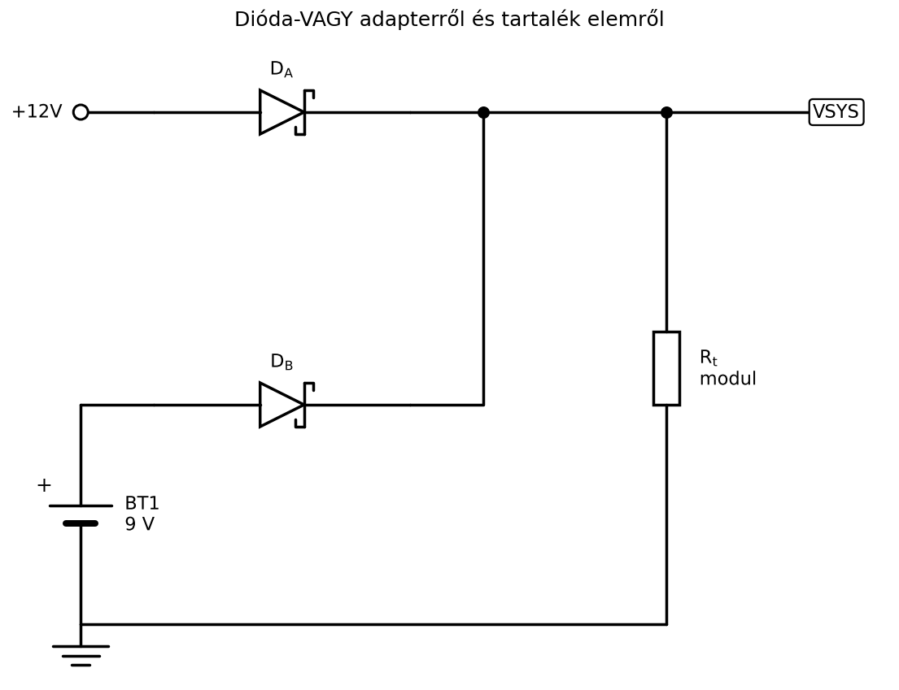
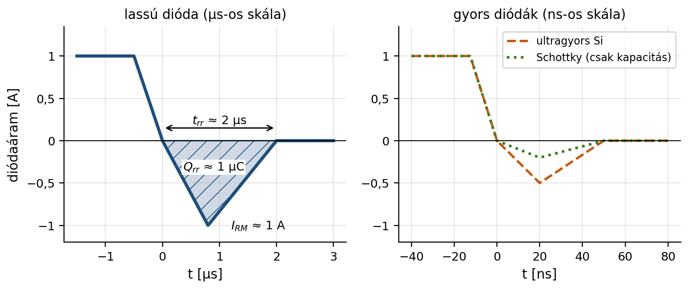

Itt a dióda egyirányú vezetését használjuk fel kész kapcsolásokban. A végére (1) méretezni tudsz egy egyenirányító pufferkondenzátorát a megengedett hullámosságra; (2) meg tudsz tervezni egy bemeneti határolót soros ellenállással, és tudod, mikor „húzza fel” a tápsínt; (3) össze tudod vetni a szilícium- és a Schottky-diódát, és kiválasztod a megfelelőt.
A szenzormodulban több helyen van szükség diódára. A bemeneti vezeték véletlenül fordítva köthető be; egy érzékelő jelvezetékére hiba esetén 12 V (a legrosszabb esetben 16 V) kerülhet, pedig a mikrovezérlő lába csak 3,3 V körüli jelet visel el; a relé tekercsének lekapcsolásakor az áramnak utat kell adni; két táplálás (adapter és tartalék elem) közül mindig a megfelelőnek kell hajtania a modult. Egy törpefeszültségű váltakozó forrásból (például függvénygenerátorból teljesítményerősítővel) pedig egyenfeszültséget kell előállítani. Hálózati (230 V-os) egyenirányítással a könyv nem foglalkozik.
Építünk A pn-átmenet és a dióda karakterisztikája modelljeire és az Elsőrendű szűrők, sávszélesség és felfutási idő alfejezet időállandó-gondolkodására.
Egyenirányításnak (rectification) azt nevezzük, amikor váltakozó feszültségből egyirányú lesz. A legegyszerűbb az egyutas egyenirányító (half-wave rectifier): egyetlen dióda sorban a terheléssel. Csak a pozitív félperiódusban vezet.

A hídkapcsolás (Graetz-híd, bridge rectifier) négy diódával a negatív félperiódust is átfordítja: mindig két dióda vezet sorban (D1 és D4, illetve D2 és D3), és a terhelésen ugyanabba az irányba folyik az áram. A rajza az alábbi ábra tetején látható. Ára: két diódányi feszültségesés egy helyett. Nyeresége: a kimenet kétszer olyan sűrűn kap utánpótlást. A harmadik megoldás, a kétutas, középleágazásos egyenirányító két diódával és középleágazásos transzformátorral dolgozik; törpe- feszültségű modulokban ritka, itt csak a nevét jegyezzük meg.
A pufferkondenzátor (reservoir capacitor) a kimenettel párhuzamos nagy kondenzátor. Amikor a forrás pillanatértéke (a diódaesésekkel csökkentve) nagyobb a kondenzátor feszültségénél, a diódák nyitnak és töltik. A többi időben a diódák zárnak, és a terhelést a kondenzátor táplálja, miközben a feszültsége lassan csökken. Ez a ringás a hullámosság (ripple), .
Gondolkodj előre: ha a terhelés 100 mA-t vesz fel, mekkora lesz a forrásból folyó áram csúcsa: kb. 100 mA, vagy sokkal több? Gondolj arra, mennyi ideig vezetnek a diódák.
A grafikon a választ is megadja: a forrás csak rövid, kb. 2,3 ms-os impulzusokban szállít áramot, de akkor 0,6 A-t, a terhelőáram hatszorosát. A kondenzátorból a két impulzus között elvett töltést ezek a rövid pillanatok pótolják.
A határoló (clamp) egy jel feszültségét korlátozza úgy, hogy túllépéskor egy dióda kinyit, és az áramot elvezeti. A mikrovezérlők lábaiban a gyártó védődiódákat helyez el a láb és a tápsín, illetve a föld között. Ezek vékony, kis áramra való diódák: egy soros ellenállás () kell, amely a rajtuk átfolyó áramot az adatlap megengedett értéke alatt tartja (a könyv mintaadata: legfeljebb 1 mA).
Figyeld meg az ábrán az áramutat: minden áramnak van visszatérő útja. A túlfeszültség árama a felső diódán a +3V3 sínre folyik, és onnan a sín fogyasztóin át a földre. Ha a sín alig fogyaszt (a modul alszik), ez az áram nem tud elfolyni, és felhúzza a tápsínt: a feszültségszabályzó általában csak áramot ad, nyelni nem tud. A 3,3 V-os sín ilyenkor akár a bemeneti feszültség közelébe emelkedhet, és minden rá kötött alkatrész veszélybe kerül.
A fogókapcsolás (szabadonfutó, flyback dióda) induktív terhelésnél ad utat a lekapcsoláskor tovább folyó áramnak. A Mágneses tér és induktivitás alfejezetben láttad: az induktivitás árama nem ugorhat. Ha a kapcsoló nyit, és nincs út, a feszültség addig nő, amíg az áram utat nem talál (szikra, átütés).

A relé árama bekapcsolva mA. Nyitáskor ez az áram a D2-n és a tekercsen át kering tovább, és a tekercs ms-os időállandójával cseng le, miközben a kapcsoló felett csak a tápfeszültség plusz egy diódaesés van. A lekapcsolási idő és a többi fogómegoldás a Biztonságos működési tartomány, lavina és induktív terhelés alfejezet témája.
A polaritásvédelem legegyszerűbb módja a tápvezetékkel sorba kötött dióda: fordított bekötésnél zár. A dióda-VAGY (diode OR) két forrást egyesít: mindig az a dióda vezet, amelyiknek a forrása magasabb, a másik zár.

Helyes bekötésnél D_A egyszerre polaritásvédő dióda is: ha az adaptert fordítva kötik be, zár.
Definíció. A töltési frekvencia azt adja meg, másodpercenként hányszor tölti fel a forrás a kondenzátort: egyutas kapcsolásnál , hídnál (itt 50, illetve 100 Hz).
Két töltés között a kondenzátor adja a terhelés áramát. A leadott töltés , és . Ha feltesszük, hogy a kisülés a teljes ideig tart, és az áram közben közel állandó:
Dimenzió: A/(1/s · F) = A·s/F = C/F = V. A képlet azt mondja: a hullámosság nő a terhelőárammal, csökken a kapacitással és a töltési frekvenciával. Felülbecsül (a kisülés rövidebb, mint ), ezért méretezésre biztonságos. Érvényessége: a hullámosság kicsi a kimeneti feszültséghez képest (kb. 20 % alatt).
A kimenet csúcsértéke közelítőleg egyutasnál, hídnál, ahol a forrás csúcsfeszültsége (Szinuszjel, effektív érték és fázis). A forrás belső ellenállása és a vezetékek az impulzusáram miatt még lejjebb viszik. A legkisebb kimeneti feszültség : ez számít, ha utána feszültségszabályzó következik.
Továbbvitt eredmény. A méretezést a lineáris szabályzó bemeneténél (Teljesítménymérleg, lineáris szabályzó és LDO) és az első záróprojektben (1. záróprojekt: védett tápegység 12 V-ról 5 V-ra és 3,3 V-ra) használjuk újra.
Legyen a bemenet legrosszabb feszültsége (pozitív vagy negatív), a dióda nyitófeszültsége , a megengedett diódaáram . Pozitív oldalon a dióda a fölötti feszültségnél, negatív oldalon alatt nyit:
A két feltétel közül a szigorúbb dönt. A negatív oldal a nehezebb, mert ott a teljes esik az ellenálláson, nem a -vel csökkentett. Legrosszabb esetben a legkisebb -fel (meleg dióda) és a tűrés szerinti legkisebb ellenállással számolj.
A sín felhúzását az áramok mérlege dönti el. A sínre beinjektált összes határolóáramnak ( bemenetnél akár -szeres) el kell férnie a sín fogyasztásában:
ahol a mindig meglévő legkisebb fogyasztás (alvó üzemben!), egy opcionális lehúzó ellenállás a sínen. Ha nem teljesül, a sín emelkedik. Lehetséges megoldások: nagyobb (lassabb jel), lehúzó a sínen (állandó fogyasztás), a sínt fogó Zener vagy TVS, vagy külső határoló a föld felé (lásd Szintillesztés, bemenetvédelem és pergésmentesítés).
Az és a láb kapacitása aluláteresztő szűrőt alkot: 22 kΩ és 10 pF (mintaadat) esetén ns, a határfrekvencia kb. 720 kHz. Lassú jelnél ez rendben van, gyors adatvonalon nem.
Továbbvitt eredmény. A soros ellenállásos határoló és a tápsín felhúzásának kockázata a Szintillesztés, bemenetvédelem és pergésmentesítés és az ESD- és túlfeszültség-védelem az áramkörben alfejezet kiindulópontja.
A soros dióda
feszültséget vesz el, és
hőt termel. 1 A-nél a szilícium egyenirányító (si_telj,
mintaadat) 0,93 V-ot és 0,93 W-ot, a DS1 Schottky 0,45 V-ot és 0,45 W-ot
jelent. A szenzormodul legkisebb 9 V-os bemeneténél ez 8,07, illetve
8,55 V maradékot hagy. Jobb megoldás (P-csatornás MOSFET, „ideális
dióda” vezérlő) a Tápbemeneti védelmek: biztosíték,
polaritás, túlfeszültség, áramlökés alfejezetben jön.
Dióda-VAGY-nál a nem vezető dióda záróirányú szivárgása a gyengébb forrásba folyik. A 12 V-os adapter mellett V, a D_B-n tehát kb. 2,6 V záróirányú feszültség van, és a modell szerinti szivárgása 25 °C-on kb. 0,1 mA, 60 °C-on kb. 1,2 mA, amely az elem felé folyik. Nem tölthető elemnél ez nem megengedett: kis szivárgású dióda vagy más kapcsolás kell.
Továbbvitt eredmény. A polaritásvédő dióda és a dióda-VAGY veszteségét és szivárgását a Tápbemeneti védelmek: biztosíték, polaritás, túlfeszültség, áramlökés alfejezet gondolja tovább.
Definíció. A Schottky-dióda fém–félvezető átmenetet használ pn-átmenet helyett. Az áramot csak többségi töltéshordozók viszik, kisebbségi töltés nem halmozódik fel. Rajzjele a diódajel, hajlított végű katódvonallal.
| Tulajdonság | Szilícium pn-dióda | Schottky-dióda |
|---|---|---|
| nyitófeszültség 1 A körül (mintaadat) | ≈ 0,9 V | ≈ 0,45 V |
| záróirányú szivárgás | kicsi (nA–µA) | nagy (µA–mA), melegben erősen nő |
| megengedett záróirányú feszültség | lehet nagy | jellemzően kisebb (adatlapfüggő) |
| kikapcsolás | feléledési idő (lassú típusnál µs) | gyakorlatilag csak a kapacitás |
| jellemző használat | kis szivárgás, nagy feszültség, jel | tápág, kapcsolóüzemű konverter, fogódióda |
Amikor egy vezető pn-dióda hirtelen záróirányú feszültséget kap, nem zár azonnal: a nyitott állapotban felhalmozódott kisebbségi töltést előbb el kell vinni. Közben záróirányú áram folyik. Ennek időtartama a feléledési idő (reverse recovery time, ), a hozzá tartozó töltés , a csúcsa . Háromszög alakú közelítéssel (dimenzió: A·s = C).

Kapcsolóüzemű áramkörben ez minden periódusban megtörténik, és a töltést a tápfeszültség ellenében kell kivinni, így a veszteség (dimenzió: C·V·1/s = W), a nagyobb része a kapcsolóelemen jelenik meg. 12 V-on, 500 kHz-en (a modul buck konverterének frekvenciája) a mintaadatokkal: lassú dióda (1 µC) 6 W, ráadásul a 2 µs-os egy teljes periódus; ultragyors (12,5 nC) 75 mW; Schottky (5 nC kapacitív töltés) 30 mW. Gyors kapcsolásban lassú egyenirányító dióda használhatatlan.
Továbbvitt eredmény. A Schottky-dióda és a záróirányú feléledés a A buck konverter diódájának választásakor és a Hatásfok, veszteségek, alkatrészválasztás és kapcsolóüzemű zaj veszteségmérlegében tér vissza.
Forrás: 9 V effektív, 50 Hz. Terhelés: 100 mA. Legfeljebb 1 V hullámosság. Szilícium diódák, V vezetés közben.
Józanész-ellenőrzés: a kondenzátor 1 mF-on 1 V-os ringásnál 1 mC töltést cserél, ez éppen a 100 mA × 10 ms. A csúcsáram nagyságrendje: az 1 mC-t kb. 2,3 ms alatt kell visszatölteni, átlagosan 0,4 A-rel, a csúcs ennél nagyobb.
Az elkit.transient darabonként lineáris diódával
szimulálja a hidat.
a forrás belső ellenállása (1 Ω), a diódák 0,75 V + 0,15 Ω (mintaadat).
Az utolsó két periódusból mérünk.
import sys; sys.path.insert(0, "code")
import math
import numpy as np
from elkit import transient as tr, units
U_CS = 9 * math.sqrt(2)
def egyeniranyito(c1=1000e-6, rt=110.0, hid=True):
c = tr.Circuit().add_vsource("U1", "s", "b" if hid else "0", tr.sine(U_CS, 50))
c.add_resistor("Rf", "s", "a", 1.0)
diodak = (("D1", "a", "p"), ("D2", "b", "p"), ("D3", "0", "a"), ("D4", "0", "b"))
for nev, an, kat in diodak if hid else diodak[:1]:
c.add_diode(nev, an, kat, u_f=0.75, r_on=0.15)
c.add_capacitor("C1", "p", "0", c1).add_resistor("Rt", "p", "0", rt)
r = c.simulate(0.2, 10e-6)
m = r.t >= 0.16
u, i = r.v("p")[m], r.i("Rf")[m]
i_ki = u.mean() / rt
f_h = 100 if hid else 50
return np.ptp(u), i_ki / (f_h * c1), u.min(), np.abs(i).max(), r.u("D1")[m].min()
for hid in (True, False):
for c1 in (470e-6, 1000e-6, 2200e-6):
du, keplet, umin, ics, u_zar = egyeniranyito(c1, hid=hid)
print(f"{'híd ' if hid else 'egyutas'} C={units.fmt(c1, 'F'):7s} "
f"dU={du:.2f} V (képlet {keplet:.2f} V) U_min={umin:.2f} V "
f"i_cs={ics:.2f} A U_R={-u_zar:.1f} V")híd C=470 µF dU=1.50 V (képlet 1.97 V) U_min=9.41 V i_cs=0.58 A U_R=11.7 V
híd C=1 mF dU=0.73 V (képlet 0.94 V) U_min=9.99 V i_cs=0.61 A U_R=11.5 V
híd C=2.2 mF dU=0.34 V (képlet 0.43 V) U_min=10.24 V i_cs=0.62 A U_R=11.4 V
egyutas C=470 µF dU=3.27 V (képlet 3.88 V) U_min=8.42 V i_cs=0.91 A U_R=22.5 V
egyutas C=1 mF dU=1.65 V (képlet 1.92 V) U_min=9.75 V i_cs=1.02 A U_R=23.2 V
egyutas C=2.2 mF dU=0.76 V (képlet 0.89 V) U_min=10.34 V i_cs=1.04 A U_R=23.4 VA képlet mindig nagyobb hullámosságot ad, mint a szimuláció, tehát a biztonság felé téved. Az egyutas kapcsolás kétszeres hullámosságot, nagyobb csúcsáramot és kétszeres záróirányú feszültséget jelent.
Határoló és polaritásvédelem:
from elkit import power as pw
V_DD, U_MAX, I_INJ = 3.3, 16.0, 1e-3
for u_f in (0.6, 0.3):
r_poz = (U_MAX - V_DD - u_f) / I_INJ
r_neg = (U_MAX - u_f) / I_INJ
print(f"U_F = {u_f} V: R_S >= {units.fmt(r_poz, 'Ω')} (+), {units.fmt(r_neg, 'Ω')} (−)")
rs = 22e3
i_be = (U_MAX - V_DD - 0.6) / rs
print(f"R_S = 22 kΩ: I = {units.fmt(i_be, 'A')} (+), {units.fmt((U_MAX - 0.6) / rs, 'A')} (−)")
u_sin = U_MAX - 0.6 - 20e-6 * rs
print(f"alvó sín (20 µA): {u_sin:.2f} V; R_b <= {units.fmt(V_DD / (i_be - 20e-6), 'Ω')}")
for nev, (du, p) in pw.polarity_losses(1.0).items():
print(f"{nev:9s} ΔU = {du:.3f} V, P = {p:.3f} W, 9 V-ból marad {9 - du:.2f} V")U_F = 0.6 V: R_S >= 12.1 kΩ (+), 15.4 kΩ (−)
U_F = 0.3 V: R_S >= 12.4 kΩ (+), 15.7 kΩ (−)
R_S = 22 kΩ: I = 550 µA (+), 700 µA (−)
alvó sín (20 µA): 14.96 V; R_b <= 6.23 kΩ
Si dióda ΔU = 0.930 V, P = 0.930 W, 9 V-ból marad 8.07 V
Schottky ΔU = 0.450 V, P = 0.450 W, 9 V-ból marad 8.55 V
p-MOSFET ΔU = 0.055 V, P = 0.055 W, 9 V-ból marad 8.95 VA p-MOSFET sora csak előkép: ugyanazt a feladatot töredék veszteséggel oldja meg.
egyeniranyito
függvénnyel keresd meg a legkisebb E6-os kapacitást, amellyel 50 Ω-os
(kb. 200 mA-es) terhelés mellett a hídkapcsolás kimenete soha nem esik
8,5 V alá. Hasonlítsd össze a képletből számolt értékkel.A diódás egyenirányító váltakozó forrásból egyirányú feszültséget állít elő; a híd mindkét félperiódust használja, két diódaeséssel. A pufferkondenzátor hullámossága (felülbecslés), a diódaáram keskeny, a terhelőáramnál sokszorta nagyobb impulzusokban folyik. A bemeneti határolónál a soros ellenállás korlátozza a belső diódák áramát, de a beinjektált áram felhúzhatja a tápsínt, ha a sín fogyasztása kisebb. Induktív terhelés mellé fogódióda kell. A soros dióda véd a fordított polaritás ellen, a dióda-VAGY forrásokat egyesít; mindkettőnél számít a feszültségesés és a szivárgás. A Schottky kis nyitófeszültségű és gyors, de szivárog; a szilíciumdióda feléledési töltése gyors kapcsolásban veszteséget okoz.
1. feladat. Híd: V. Egyutas: Hz, V.
2. feladat. µF; E6-ból 1000 µF (680 µF kevés). A ±20 %-os tűrés legrosszabb esete 800 µF, éppen elég.
3. feladat. Negatív oldal: kΩ. A legkisebb érték a névleges 0,95-szöröse, tehát kΩ; E24-ből 51 kΩ. Pozitív oldal: kΩ, teljesül.
4. feladat. Pozitív oldalon vonalanként legfeljebb mA, négy vonalon 1,68 mA, ami sokkal több 50 µA-nél: a sín felhúzódik. kΩ, választás 1,8 kΩ, amely állandóan 1,8 mA-t fogyaszt. Alvó üzemű modulban ez elfogadhatatlan, más határolás (sínt fogó Zener/TVS vagy külső határoló) jobb.
5. feladat. W; a veszteség %.
6. feladat. A képletes becslés: V, a megengedett V, µF, E6-ból 1000 µF. A szimuláció:
for c1 in (470e-6, 680e-6, 1000e-6, 1500e-6, 2200e-6):
du, _, umin, ics, _ = egyeniranyito(c1, rt=50.0)
print(f"C = {units.fmt(c1, 'F'):7s} U_min = {umin:.2f} V dU = {du:.2f} V")
if umin >= 8.5:
print("a legkisebb megfelelő E6-os érték:", units.fmt(c1, "F"))
breakC = 470 µF U_min = 7.99 V dU = 2.75 V
C = 680 µF U_min = 8.62 V dU = 2.00 V
a legkisebb megfelelő E6-os érték: 680 µFA szimuláció szerint már 680 µF elég, mert a képlet felülbecsüli a hullámosságot. A tartalék azonban csekély (0,12 V): a ±20 %-os tűrés alsó szélén (544 µF) a határ nem teljesülne, ezért az 1000 µF a helyes tervezői választás. A nagyobb terhelőáram az -en is nagyobb esést okoz, ezért a kimenet csúcsa alacsonyabb a kézi V-nál: mindig a legkisebb pillanatértéket ellenőrizd.